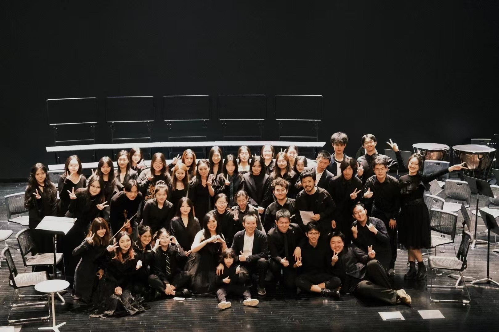

Infinity

My love for music extends beyond traditional instruments, as I am also an active member of the band Infinity For, where I serve as the vocalist. This role allows me to connect with my friends on a deeper level, as we share the common goal of creating harmonious melodies and memorable performances. The synergy within our group is palpable, and each practice session is filled with laughter, creativity, and the pure joy of making music together. Our shared passion for music not only strengthens our friendships but also allows us to express ourselves artistically and connect with our audience on an emotional level.
Yangqin

Since childhood, I have been captivated by the ethereal sounds of the yangqin, a traditional Chinese musical instrument, and have diligently practiced it from a young age. My passion for this instrument led me to participate in numerous yangqin performances both within and outside of my school. My dedication and hard work culminated at the age of twelve when I earned my first-level performance certificate, a significant milestone that marked my proficiency in this art form. The joy of traditional Chinese music is something I cherish deeply, and my musical journey doesn't stop there. I have also expanded my repertoire to include other instruments, further enriching my understanding and appreciation of diverse musical styles.
Chorus
In addition to my involvement with the band, I am also an active participant in the choir, where I contribute as a tenor. My voice resonates with the team and clarity that the tenor part demands, and I take great pride in my contributions to the group's overall sound. The choir has provided me with a platform to explore different genres and styles of music, and it has been a rewarding experience to work with a diverse group of singers who share a common love for vocal harmony. Recently, we concluded a successful run of performances during the Christmas season, which was a particularly special time for us. The joyous melodies and festive spirit of the season were beautifully captured through our collective voices, and it was a memorable experience that I will cherish for a long time.